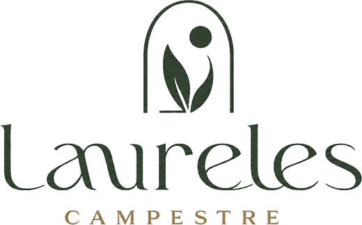

Relieve

86 lotes campestres desde 3.100 m², sobre 37 hectáreas atravesadas por una cañada de bosque protegido, a minutos de Armenia y del aeropuerto El Edén.
Geometría real del plano 039 en coordenadas MAGNA-SIRGAS CTM12, sobre imagen satelital en vivo. El lindero cae a 0,42 m del carreteable existente, medido contra la foto aérea.